Monsieur — desert
Two days in the high desert for the artist Monsieur, shot with Ariles de Tizi. A section of white pipe found lying in the sand, a Jeep for a grip truck, a drone off its bonnet — and a jerrycan that had to roll.
Deux jours dans le haut désert pour l'artiste Monsieur, tournés avec Ariles de Tizi. Un tronçon de conduite blanche trouvé couché dans le sable, une Jeep en guise de camion machinerie, un drone lancé de son capot — et un bidon d'essence qui devait rouler.
Two days in the high desert, the first of May 2021. The set was found rather than built: a section of white pipe, big enough to stand on, lying in the sand and running off toward the mountains like a road that had been left there. Everything got composed against it — the artist on top of it, beside it, sitting in its mouth.
Deux jours dans le haut désert, au premier mai 2021. Le décor a été trouvé plutôt que fabriqué : un tronçon de conduite blanche, assez large pour qu'on tienne debout dessus, couché dans le sable et filant vers les montagnes comme une route qu'on aurait oubliée là. Tout s'est composé contre elle — l'artiste dessus, à côté, assis dans sa bouche.
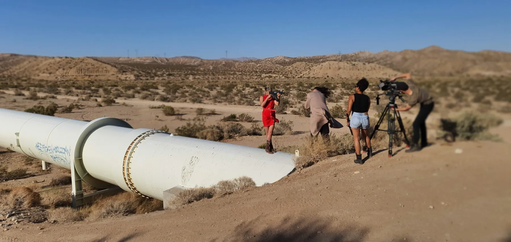
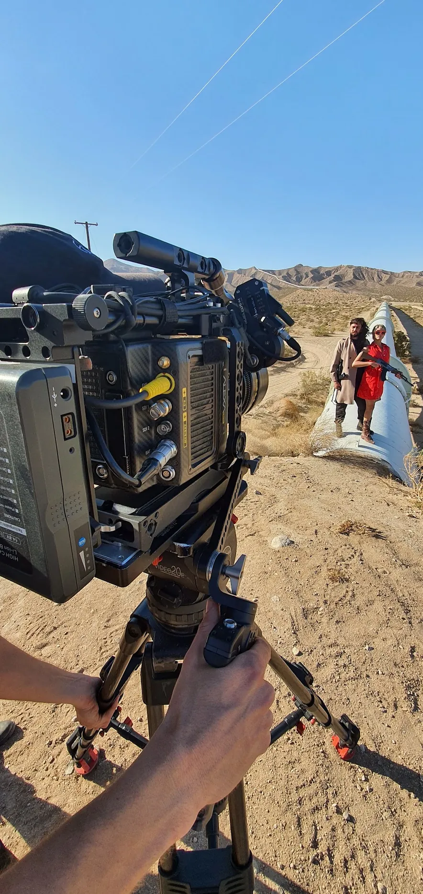
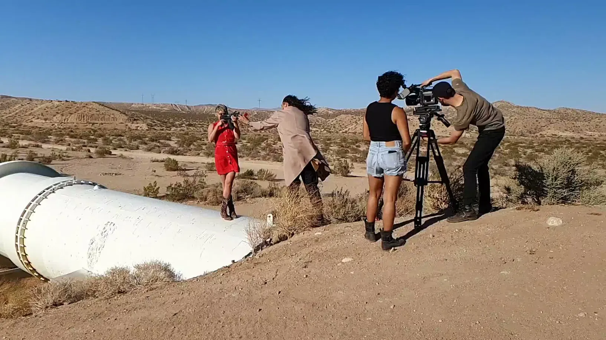
A RED and a Blackmagic 4K, and a drone that lived on the bonnet of the Jeep between takes. The Jeep was the whole grip department: camera platform, launch pad, shade, and the way anything got from one setup to the next.
Une RED et une Blackmagic 4K, et un drone qui vivait sur le capot de la Jeep entre les prises. La Jeep tenait lieu de machinerie complète : plateforme caméra, aire de décollage, ombre, et moyen de transport d'un poste au suivant.
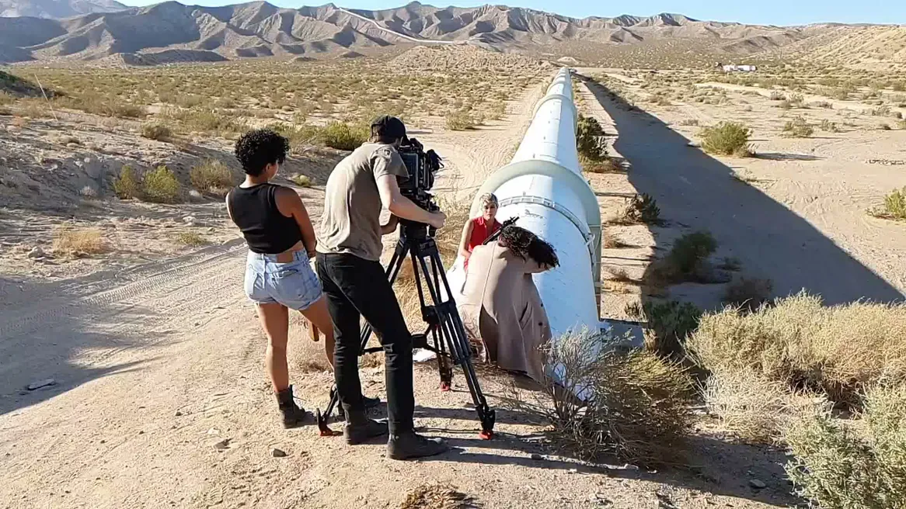
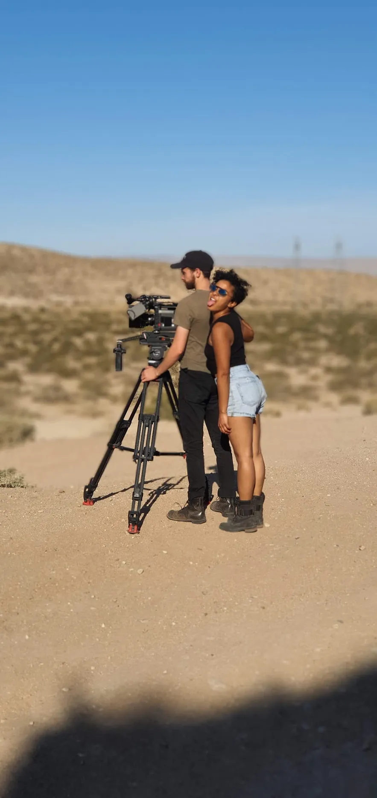
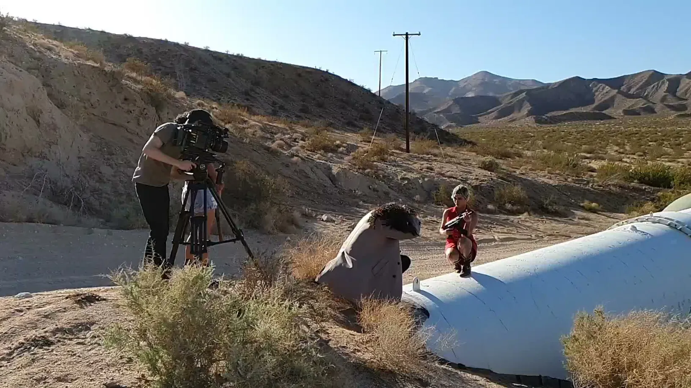
Mr. Pinoux did the previz, then flew the drone and carried the Steadicam — including the shot that follows the jerrycan as it rolls. Previz on a shoot this size is not storyboarding for its own sake: with two cameras, one vehicle and a location that has no shade, knowing the order of the day is what buys the day.
Mr. Pinoux a fait la prévisualisation, puis piloté le drone et porté le Steadicam — dont le plan qui suit le bidon d'essence en train de rouler. Sur un tournage de cette taille, la prévise n'est pas du storyboard pour le plaisir : avec deux caméras, un véhicule et un décor sans une ombre, connaître l'ordre de la journée, c'est ce qui permet de la tenir.
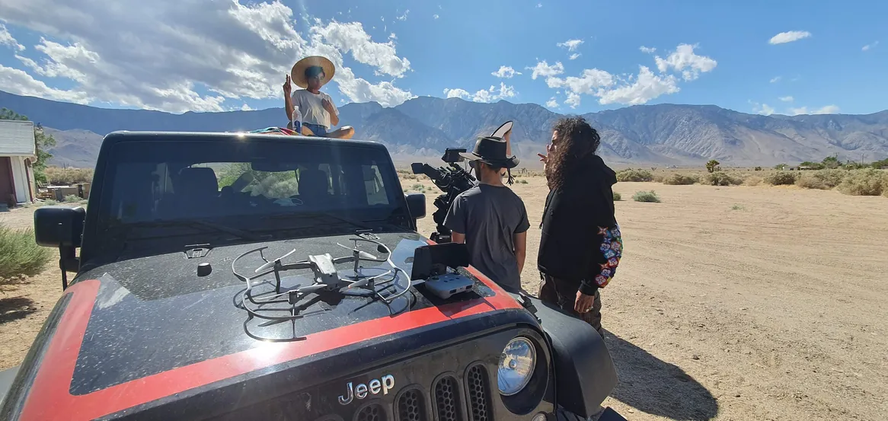
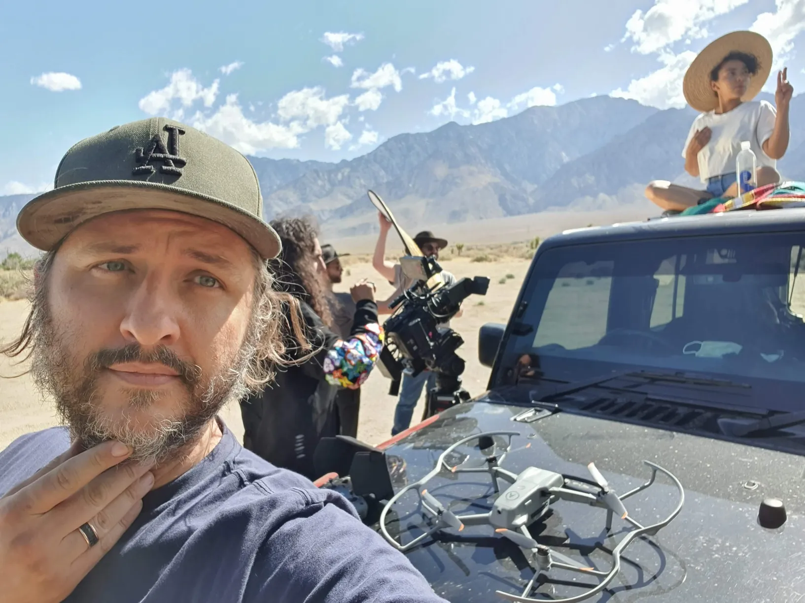
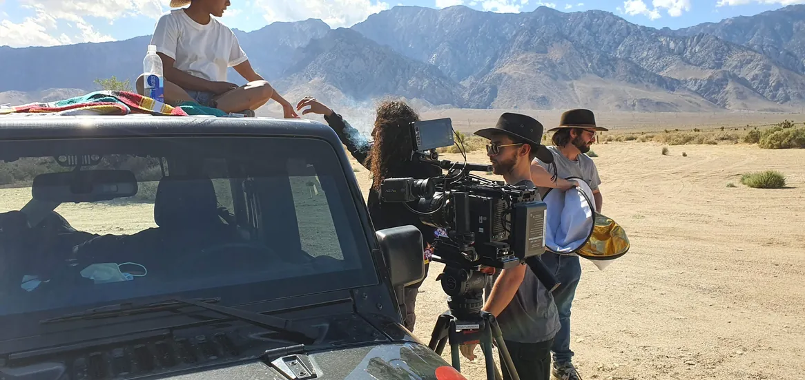
The edit went to Ariles de Tizi, who had shot alongside on the day. The desert had come two weeks after the green-screen session for the same artist — near enough to feel like the day after, far enough that the light had changed.
Le montage est parti chez Ariles de Tizi, qui avait tourné à côté le jour même. Le désert venait deux semaines après la séance sur fond vert pour le même artiste — assez près pour qu'on croie au lendemain, assez loin pour que la lumière ait changé.
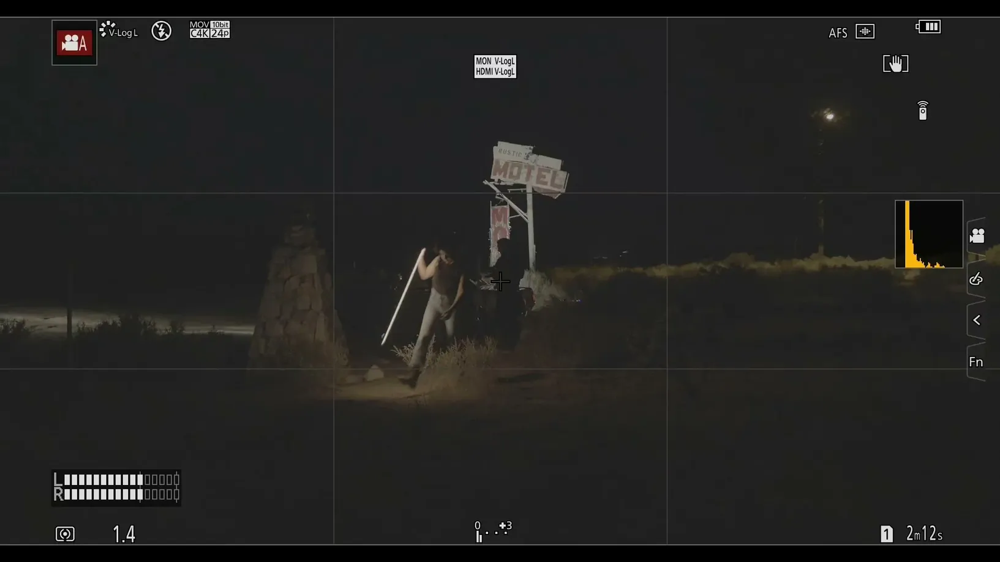
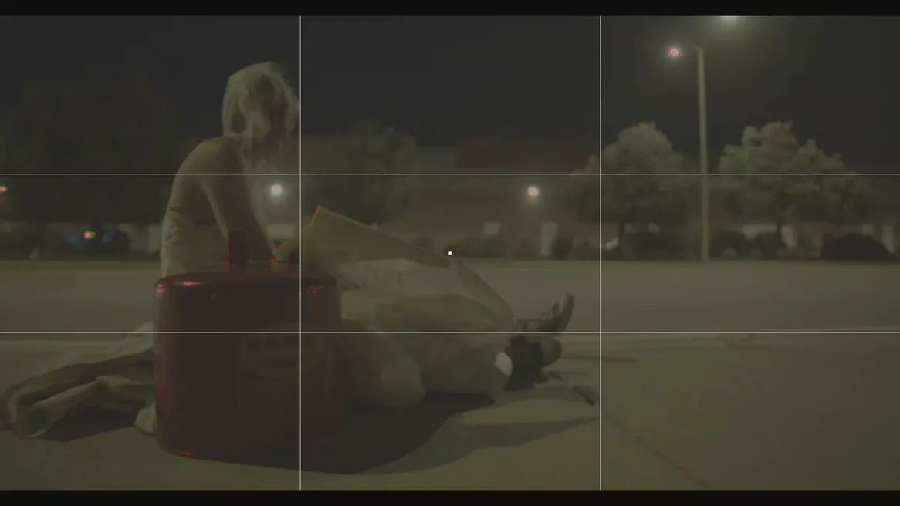
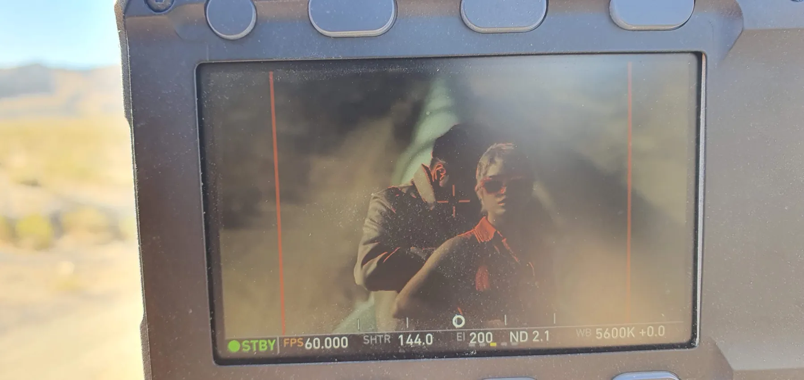